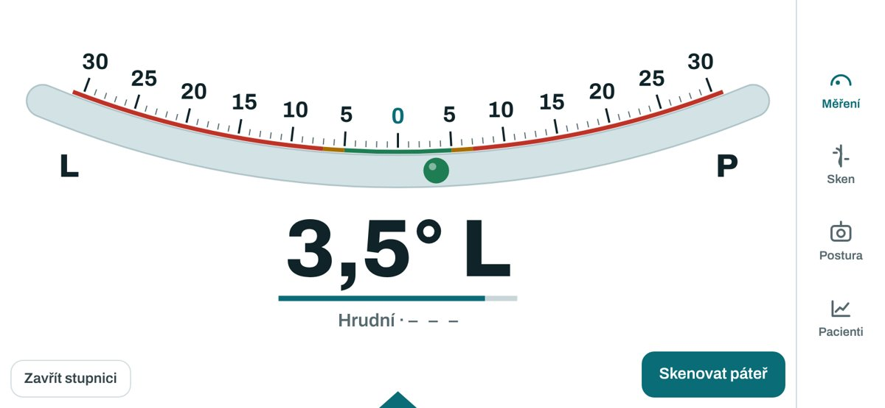
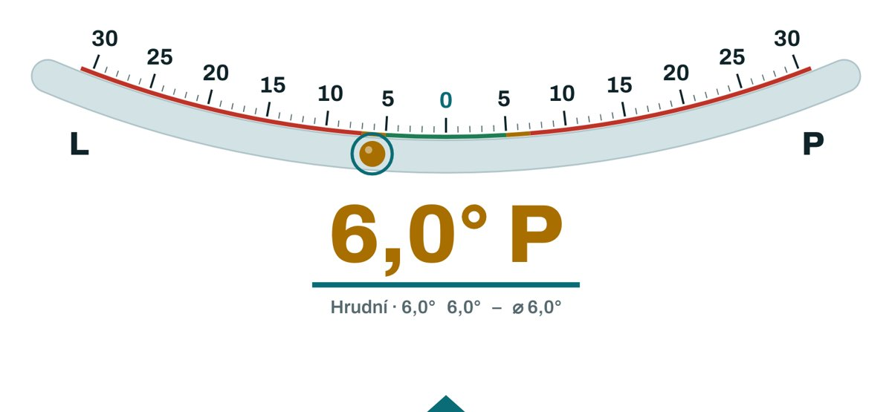

Skoliometr – návrhy ergonomie ovládání
26. 10. 2026 · aplikace: tomasdebowski-a11y.github.io/Scoliometr
Obrázky
Rozložení na šířku s bočním panelem a stupnicí přístroje:

Režim přístroje (Bunnellova stupnice):

Výchozí situace
Největší brzdou dnes je, že pro každý krok musíš sundat ruku z telefonu a podívat se na displej. Při měření máš obě ruce na přístroji, pacient vydrží v předklonu jen omezenou dobu a pozornost má patřit jemu.
- Funguje: samozámek hodnoty po ustálení, pípnutí a hlasové hlášení, režim přístroje na hraně, sken spouštěný podržením nebo dotykem.
- Drhne: oblast (Th, Th‑L, L) se přepíná ručně, chybné přiložení jde smazat jen celé, rozpracované vyšetření se při zavření aplikace ztratí, pacient se vybírá až při ukládání a výsledek do dokumentace se přepisuje ručně.
Návrhy
1. Obrazovka na šířku jako hlavní pracovní plocha (hotovo)
- Spodní lišta se na šířku mění na úzký svislý panel u kraje se čtyřmi ikonami (Měření, Sken, Postura, Pacienti).
- Panel je na straně palce, volba „vpravo / vlevo“ je v Nastavení.
- Střed patří stupnici a velkému číslu, tlačítka jsou v dolních rozích.
2. Vedený průběh vyšetření
- Na začátku vybereš pacienta z dnešních nebo naposledy vyšetřených jedním klepnutím. Pro školní screening bude režim bez pacienta s počítadlem.
- Hrudní oblast, tři přiložení. Po třetím aplikace řekne průměr a sama přepne na Th‑L, potom na bederní.
- Volitelně sken. Pak se ukáže souhrn a vyšetření se uloží samo.
Oblast, kterou nechceš měřit, přeskočíš klepnutím nebo povelem „dál“.
3. Ovládání bez sundání rukou
- Ťuknutí prstem na telefon: akcelerometr pozná ťuknutí na kryt. Dvě ťuknutí znamenají „zaznamenej teď“, tři ťuknutí „zruš poslední přiložení“. Funguje i v rukavicích.
- Hlas: nové povely „zpět“, „dál“, „pauza“, „konec“ a „opakuj“ (přečte poslední hodnotu).
- Zvednutí a nové přiložení zůstává hlavním gestem pro další měření, nic se nepotvrzuje.
4. Přerušení
- Rozpracované vyšetření se průběžně ukládá jako koncept. Po telefonu, zhasnutí nebo zavření aplikace nabídne „Pokračovat ve vyšetření pacienta X“.
- Když se pacient potřebuje narovnat, položíš telefon na plocho a aplikace pozastaví. Po návratu na hranu pokračuje.
5. Oprava
- Klepnutím na jednotlivé přiložení ho smažeš nebo změříš znovu, ne celou oblast. Po smazání je 5 s tlačítko „Vrátit“.
- Hlídání odlehlé hodnoty: když se jedno přiložení liší od ostatních o víc než 2°, aplikace upozorní a požádá o čtvrté přiložení.
- Uložené vyšetření půjde upravit, s poznámkou kdy bylo změněno.
6. Výsledky
- Souhrn na šířku na jedné obrazovce: tři oblasti se semaforem, rozdíl proti minulé kontrole, křivka ze skenu a miniatura posturní fotky.
- Souhrn se zároveň přečte nahlas.
7. Export a zápis do dokumentace
- Řádek do karty pacienta jedním klepnutím, třeba „ATR (Bunnell, Adams): Th 6,5° P, Th‑L 2,0° L, L 4,0° L; změna Th +1,5° od 3/2026“.
- Zpráva v PDF na jednu stranu s křivkou, fotkou a grafem vývoje, poslaná přes sdílení.
- Připomínka zálohy jednou týdně, protože data žijí jen v telefonu.
Doporučené pořadí
- Rozložení na šířku (hotovo).
- Vedený průběh s automatickým přepínáním oblastí a průběžným konceptem (návrhy 2 a 4).
- Oprava jednotlivého přiložení a hlídání odlehlé hodnoty (5).
- Řádek do dokumentace a zpráva v PDF (7).
- Ťuknutí na telefon a nové hlasové povely (3).
Otázky pro tebe
- Kterou rukou ovládáš displej, tedy kam dát panel?
- Měříš vždy všechny tři oblasti, nebo často jen jednu?
- Jaký ambulantní software používáš (kvůli formátu řádku do dokumentace)?
- Stačí tři přiložení, nebo chceš nastavitelný počet?